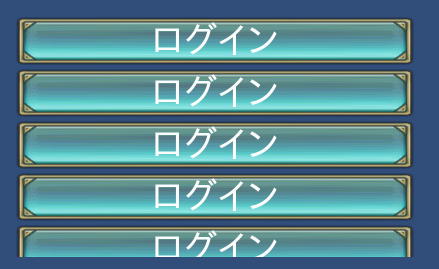

LISTBOXEX¶
リストボックスのためのコントロールです。
コンテンツを複製し、それを一行とします。
コンテンツの数はメモリが許す限り自由に設定可能です。
垂直方向にコンテンツが並んでいるリストボックスだけでなく、水平方向にも並べることも可能です。
LISTBOXと違う点は、コンテンツサイズを自動的に計測するところです。
垂直方向に並んでいる場合は、縦幅のみ自動計算の対象になります。
それに対して水平方向に並んでいる場合は、横幅のみ自動計算の対象になります。
このコントロールはスクロール可能なコントロールです。
STYLEに SCROLL_LOCK をつけておくと、onDragコールバックが呼び出され、ドラッグした方向を検出できます。 DRAGをつけても、これらコントロールには効果がないことに気を付けてください。
LISTBOXEX(コントロール名) {
プロパティ1;
プロパティ2;
:
:
プロパティn;
};
記述例¶
WINDOW(255_000_00001) { STYLE = NOTITLEBAR|NOFRAME|ANCHOR_CENTER; POSITION = 0,100; SIZE = 512,256; }; $w = 400; LISTBOXEX(List) { ID = 001_100_00000; POSITION = 0,0; STYLE = ANCHOR_BOTTOM; SIZE = $w,{100} - 16; CONTENTS = { CHECKBOX(IP) { ID = 001_000_00020; CAPTION = 001_000_00030; STYLE = ANCHOR_LEFTTOP; POSITION = 0,0; SIZE = $w,48; }; }; LINE_SPACE = 4; GROUP = SCROLLBAR(List); }; SCROLLBAR(List) { ID = 001_100_00010; STYLE = ANCHOR_LEFTTOP; POSITION = 4,16; SIZE = 0,-16 * 2; };
プロパティ¶
代表的なデフォルト値¶
STYLE = ITEM_STACK_V; //Arranged in the vertical direction COLOR = 1,1,1,1; CAPTION_COLOR = 1,1,1,1; SE_ID = scrollSE;
ID = コントロールID¶
コントロールIDを定義します。
ID = 001_000_00010;注釈
設定しなかったときは、自動的にハッシュ値から生成します。
SIZE = 横サイズ,縦サイズ¶
表示サイズを変更します。 省略したとき、若しくは、0を指定すると、テクスチャパーツからサイズを取得してきます。
SIZE = 512,512; //512x512 SIZE = {50} - 100,{50} + 100; //screen width * 0.5 - 100,screen height * 0.5 + 100サイズは 割合指定 が可能です。
CONTENTS_SIZE = 横幅，縦幅¶
一行のサイズを決定します。
垂直方向に並んでいる場合は、縦幅は自動計算の対象になるので横幅のみ反映対象になります。
それに対して水平方向に並んでいる場合は、横幅は自動計算の対象になるので縦幅のみ反映対象になります。
その他はLISTBOXと同じ振る舞いをします。
// only vertical direction to scroll SIZE = 400,400; //display size CONTENTS_SIZE = 400,40; //virtual screen size // Scroll to the left and right direction SIZE = 400,400; //display size CONTENTS_SIZE = 800,40; //virtual screen sizeコンテンツサイズは 割合指定 が可能です。
CONTENTS = { コントロール定義; … }¶
LISTBOXの中の一行を定義するためのコンテンツを列挙します。
コントロールの座標は、LISTBOXの座標から相対で配置されます。
全てのコントロールを関連付けることが可能です。
// It is also possible to put the list box in the list box CONTENTS = { BUTTON(A) { : }; CHECKBOX(B) { : }; LISTBOX(C) { : };C#からコンテンツリストの特定のコントロールに対してアクセスする方法 は こちら を参考にしてください。
LINE_SPACE = 行間ピクセル値¶
コンテンツとコンテンツ間の隙間をこのプロパティで設定可能です。
LINE_SPACE = 8; //Put an 8-dot space.割合指定はできません。
GROUP = SCROLLBARコントロールID,…¶
SCROLLBARコントロールをGROUPとして定義しておくと、自動的にリストボックスと連動してスクロールバーを表示します。
CONTENTSに入れないように気を付けてください。
複数のスクロールバーを関連付けることも可能です。
GROUP = SCROLLBAR(Horizon),SCROLLBAR(Vertical);
COLOR = R,G,B,A¶
カラーを指定します。 カラー変更することによって、含まれるコントロール全てに影響を与えます。
R,G,Bについては、0～2の間で指定してください。
1を超えたとき、そのカラー成分を2倍まで上げて表示することができます。
Aについては、0～1の間で指定してください。
SE_ID = SE_ID¶
スクロールし、コンテンツの先頭が変わった時鳴らす音を設定します。 デフォルトは、scrollSEです。 0を指定すると音が鳴らなくなります。
STYLE = フラグ0|フラグ1|..|フラグn¶
リストボックス固有のスタイルは以下のものがあります。
リストボックス制御フラグ |
説明 |
|---|---|
ITEM_STACK_V |
垂直方向に並んでいるリストボックス |
ITEM_STACK_H |
水平方向に並んでいるリストボックス |
NOBOUNCES |
端までスクロールしたとき、勢いが残っていても跳ね返らない |
SCROLL_UNLOCK |
スクロールを許可する。 |
SCROLL_LOCK |
スクロールを抑制する。 |
コントロールの表示アンカーを指定できます。
表示位置アンカーフラグ |
説明 |
|---|---|
ANCHOR_DEFAULT |
アンカー位置を左上に設定 ANCHOR_LEFTTOPと同じ コントロールの中心位置はデフォルトで、BASE_LEFTTOPになる。 |
ANCHOR_LEFTTOP |
アンカー位置を左上に設定 コントロールの中心位置はデフォルトで、BASE_LEFTTOPになる。 |
ANCHOR_LEFT |
アンカー位置を左に設定 縦にはセンタリング コントロールの中心位置はデフォルトで、BASE_LEFTになる。 |
ANCHOR_LEFTBOTTOM |
アンカー位置を左に設定 縦には下辺を基準に配置 コントロールの中心位置はデフォルトで、BASE_LEFTBOTTOMになる。 |
ANCHOR_TOP |
アンカー位置を上辺に設定 横方向にはセンタリング コントロールの中心位置はデフォルトで、BASE_TOPになる。 |
ANCHOR_CENTER |
アンカー位置を画面中央にセンタリング コントロールの中心位置はデフォルトで、BASE_CENTERになる。 |
ANCHOR_BOTTOM |
アンカー位置を底辺に設定 横方向にはセンタリング コントロールの中心位置はデフォルトで、BASE_BOTTOMになる。 |
ANCHOR_RIGHTTOP |
アンカー位置を右上に設定 コントロールの中心位置はデフォルトで、BASE_RIGHTBOTTOMになる。 |
ANCHOR_RIGHT |
アンカー位置を右に設定 縦にはセンタリング コントロールの中心位置はデフォルトで、BASE_RIGHTになる。 |
ANCHOR_RIGHTBOTTOM |
アンカー位置を右に設定 縦には下辺を基準に配置 コントロールの中心位置はデフォルトで、BASE_RIGHTBOTTOMになる。 |
コントロールの中心位置を指定できます。
中心位置変更フラグ |
説明 |
|---|---|
BASE_DEFAULT |
アンカーフラグに応じて変わる。 特に指定しなければ、これになります。 各アンカーフラグの説明を参照 |
BASE_LEFTTOP |
中心位置をコントロールの左上に設定 |
BASE_LEFT |
中心位置を左に設定 縦にはコントロールの真中 |
BASE_LEFTBOTTOM |
中心位置を左下に設定 |
BASE_TOP |
中心位置を上辺に設定 横にはコントロールの中心 |
BASE_CENTER |
中心位置をコントロールの中心 |
BASE_BOTTOM |
中心位置を底辺に設定 横方向にはコントロールの真中 |
BASE_RIGHTTOP |
中心位置をコントロールの右上に設定 |
BASE_RIGHT |
中心位置を右に設定 横にはコントロールの中心 |
BASE_RIGHTBOTTOM |
中心位置を右下に設定 |
機能を制限するスタイルは以下のものがあります。
機能制限スタイル |
説明 |
|---|---|
HIDE |
表示を隠す。 |
DISABLE |
押せなくし、暗くする。 |
NOHIT |
押せなくする。 |
ITEM_STACK_V |
垂直方向に並んでいるリストボックス |
ITEM_STACK_H |
水平方向に並んでいるリストボックス |
NOBOUNCES |
端までスクロールしたとき、勢いが残っていても跳ね返らない |
SCROLL_UNLOCK |
スクロールを許可する。 |
SCROLL_LOCK |
スクロールを抑制する。 |